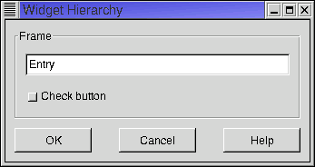

Widgety v GTK+ jsou hierarchicky uspoøádané. Existují dvì hierarchie – widgetù a tøíd. Widgety v programu jsou uspoøádány do stromové struktury. V koøeni stromu je v¾dy top-level okno. Je to vìt¹inou hlavní okno aplikace nebo dialog. Program má tolik stromù widgetù, kolik má top-level oken. V uzlech stromu jsou widgety uvnitø top-level okna. V¹echny uzly kromì listù jsou takzvané kontejnery, tedy widgety, do nich¾ lze vlo¾it dal¹í jeden nebo více widgetù. Vzhled oken na obrazovce pøímo odpovídá hierarchii widgetù. Okna potomkù le¾í v¾dy uvnitø okna rodièovského widgetu. Na obr. 1 je pøíklad top-level okna programu a odpovídající strom widgetù je na obr2.

Obr. 1: Pøíklad top-level okna
Obr. 2: Pøíklad stromu widgetù
Obrázek 2 není úplnì pøesný, proto¾e objekty typu GtkButton a GtkCheckButton nejsou pravé listy. Ve skuteènosti jsou to kontejnerové widgety, které obvykle obsahují nápis typu GtkLabel.
Hierarchie widgetù je v ka¾dém programu jiná a dynamicky se mìní podle toho, jak vznikají a zanikají jednotlivé widgety. Druhý typ hierarchie je daný vztahy dìdiènosti mezi tøídami widgetù. Spoleèným pøedkem v¹ech tøíd je GObject definovaný ve stejnojmenné knihovnì. V knihovnì GTK+ je od GObject odvozená tøída GtkObject a z ní dále GtkWidget, co¾ je bázová tøída pro v¹echny widgety. Základ stromu widgetù je v¾dy stejný, odli¹nosti vznikají, pokud program definuje vlastní nové typy widgetù. Malý výøez hierarchie typù widgetù je na obr. 3.
Obr. 3: Èást stromu tøíd widgetù
Pro ka¾dou tøídu existuje jedna nebo více funkcí pro vytvoøení objektù této tøídy. Napø. prázdné tlaèítko se vytvoøí voláním gtk_button_new. Funkce gtk_button_new_with_label vyrobí tlaèítko s nápisem. Dal¹í mo¾nosti jsou tlaèítko s akcelerátorem gtk_button_new_with_mnemonic nebo pøeddefinované tlaèítko s nápisem a ikonou gtk_button_new_from_stock. Zavoláním funkce pro vytvoøení widgetu vznikne objekt uvnitø programu – X klienta. Aby byl widget vidìt na obrazovce, je tøeba ho realizovat, tj. vytvoøit pro nìj GDK okno a dále X okno, které existuje v X serveru. Realizaci provádí funkce gtk_widget_realize. Následnì je widget zobrazen pomocí gtk_widget_show, popø. gtk_widget_show_all zobrazí widget vèetnì v¹ech potomkù. Tyto dvì funkce se postarají i o vytvoøení X oken, proto není nutné explicitnì volat gtk_widget_realize. Existující widget lze opakovanì zobrazovat a schovávat pomocí gtk_widget_show a gtk_widget_hide. Existenci widgetu – vèetnì GDK a X okna – ukonèí funkce gtk_widget_destroy.
GTK+ pou¾ívá pøi správì pamìti poèítání referencí na objekty (reference counting). U ka¾dého objektu se pamatuje poèet referencí na nìj, tedy poèet ukazatelù na objekt. Pøi ulo¾ení odkazu na objekt do nìjakého ukazatele je tøeba voláním funkce g_object_ref zvý¹it o 1 poèet referencí. Naopak, pokud se hodnota ukazatele zmìní, je nutné sní¾it poèet referencí pomocí g_object_unref. Kdy¾ poèet referencí klesne na nulu, znamená to, ¾e objekt nadále není dostupný pøes ¾ádný ukazatel. GTK+ takový objekt automaticky zru¹í. Reference counting nefunguje dobøe pro cyklické datové struktury. Jestli¾e existuje nìkolik objektù, které tvoøí cyklus vzájemných odkazù, poèet referencí na ka¾dý objekt v cyklu je v¾dy aspoò jedna, i kdy¾ „zvenku“ na ¾ádný z objektù neexistuje ¾ádný odkaz a datová struktura jako celek je nedostupná. V takovém pøípadì je mo¾né nìkteré ukazatele nezahrnovat do poètu referencí. Potom ov¹em pøi zru¹ení objektu zbude neplatný ukazatel. Lep¹ím øe¹ením je pou¾ívání tzv. slabých referencí (weak reference). Pøi nastavení hodnoty ukazatele se volá g_object_weakref. Tím se zaregistruje funkce, která bude automaticky zavolána pøi zru¹ení objektu. Tato funkce mù¾e napø. vynulovat ukazatel. Pøi zmìnì hodnoty ukazatele je mo¾né odregistrovat slabou referenci voláním g_object_weakunref.
Mechanismus poèítání referencí ponìkud komplikují tzv. plovoucí reference. Funkce pro vytvoøení widgetu vrátí ukazatel na objekt, který pøedstavuje jednu referenci. Obvykle je nový widget následnì vlo¾en do kontejneru, který pøidá dal¹í referenci. Pøi zru¹ení kontejneru vìt¹inou chceme automaticky zru¹it i v¹echny v nìm vlo¾ené widgety. Abychom nemuseli v¾dy po vlo¾ení widgetu do kontejneru volat g_object_unref, je první reference na objekt vytvoøena jako plovoucí (floating). Kontejner tuto referenci zru¹í pomocí gtk_object_sink poté, co pøidá vlastní referenci. Je tøeba dávat pozor na to, ¾e pøi vyjmutí widgetu z kontejneru (funkcí gtk_container_remove) zru¹í kontejner svou referenci. Pokud nechceme, aby se vyjmutý widget zru¹il, musíme pøed voláním gtk_container_remove pou¾ít g_object_ref. Takto vytvoøená reference u¾ není plovoucí, proto zùstane platná i pøi opìtovném vlo¾ení widgetu do kontejneru. Plovoucí je v¾dy pouze první reference na objekt. První volání gtk_object_sink ji odstraní, opakovaná volání této funkce pro stejný objekt u¾ nedìlají nic.
Kontejnery jsou widgety, do nich¾ lze vkládat jiné widgety (vèetnì dal¹ích kontejnerù). V¹echny kontejnery vycházejí ze spoleèného pøedka GtkContainer. Dají se rozdìlit do dvou hlavních skupin. Jednu skupinu tvoøí tøídy odvozené z GtkBin a vyznaèují se tím, ¾e mohou obsahovat maximálnì jeden synovský widget, pøístupný pøes polo¾ku GtkBin.child. Asi nejdùle¾itìj¹ím zástupcem této skupiny je tøída GtkWindow, tedy top-level okno. Do kontejnerù z druhé skupiny lze vlo¾it více widgetù. Jejími nejpou¾ívanìj¹ími èleny jsou boxy (GtkHBox a GtkVBox) obsahující widgety uspoøádané do øádku nebo sloupce a tabulky (GtkTable), které umís»ují synovské widgety do dvojrozmìrné møí¾ky.
Kontejnery zaji¹»ují automatické pøidìlování místa pro jednotlivé widgety. Ne¾ se zobrazí top-level okno, zjistí GTK+ po¾adovanou velikost okna a v¹ech jeho potomkù. K tomu se pou¾ívá metoda gtk_widget_size_request, která vrátí minimální widgetem po¾adovanou velikost. Kontejnery mají tuto metodu pøedefinovanou tak, ¾e se nejprve zavolá pro v¹echny synovské widgety a z jejich po¾adavkù kontejner spoèítá, jak musí být velký, aby se do nìj v¹ichni potomci ve¹li. Napø. horizontální box vrátí po¾adovanou ¹íøku rovnou souètu ¹íøek synovských widgetù plus velikost mezer podle parametrù boxu a vý¹ku rovnou maximu vý¹ek synovských widgetù. Následnì GTK+ ve spolupráci s window managerem nastaví velikost top-level okna. Skuteèná velikost se mù¾e li¹it od po¾adované, napø. pokud u¾ivatel pomocí window manageru zmìnil rozmìry okna. Nakonec GTK+ oznámí oknu skuteènì pøidìlenou velikost voláním metody gtk_widget_size_allocate. V kontejnerech tato metoda rozdìlí oblast widgetu mezi jednotlivé synovské widgety a výsledek rozdìlení jim oznámí opìt voláním gtk_widget_size_allocate.
Nìkteré funkce jsou spoleèné pro v¹echny kontejnery a jsou definované ve tøídì GtkContainer.
Horizontální (GtkHBox) a vertikální (GtkVBox) boxy jsou odvozené ze spoleèného pøedka GtkBox. Pro vytvoøení boxu slou¾í funkce
GtkWidget* gtk_hbox_new(gboolean homogeneous, gint spacing); GtkWidget* gtk_vbox_new(gboolean homogeneous, gint spacing);Parametr homogeneous øíká, zda v¹echny synovské hodnoty budou stejnì velké. Parametr spacing nastavuje velikost mezery (v pixelech) ponechané mezi ka¾dou dvojicí widgetù. Pro vkládání widgetù do boxù jsou definovány funkce
void gtk_box_pack_start(GtkBox *box, GtkWidget *child, gboolean expand, gboolean fill, guint padding); void gtk_box_pack_end(GtkBox *box, GtkWidget *child, gboolean expand, gboolean fill, guint padding);První z nich vkládá widgety od levého/horního okraje boxu smìrem doprava/dolù, druhá vkládá od pravého/dolního okraje smìrem doleva/nahoru. Parametr expand øíká, zda widget mù¾e zabírat více místa ne¾ je jeho minimální velikost. Pokud je nastaven na TRUE a fill je také TRUE, bude widget zvìt¹en tak, aby zaplnil ve¹keré dostupné místo. Pøi fill rovném FALSE nebude widget zvìt¹en a pøípadné nadbyteèné místo se stane souèástí mezer kolem widgetu. Parametr padding definuje ¹íøku prázdného místa po obou stranách widgetu. Parametry ovlivòují pouze jeden rozmìr vkládaných widgetù. Vý¹ka v¹ech synù hboxu, resp. ¹íøka synù vboxu, je stejná a je rovna vý¹ce (¹íøce) boxu zmen¹ené o okraj.
Význam jednotlivých parametrù boxu je zobrazen na obr. 4. Pro experimentování s boxy lze vyu¾ít program boxes.c, který nejdøíve pøeète ze standardního vstupu specifikace boxu a jeho synovských widgetù a následnì box zobrazí.
Obr. 4: Parametry boxu
Tabulka (GtkTable) se vytvoøí funkcí
GtkWidget* gtk_table_new(guint rows, guint columns, gboolean homogeneous);Parametry definují poèet øádkù a sloupcù a zda v¹echna políèka tabulky mají být stejnì velká. Pøi vkládání widgetù pomocí
void gtk_table_attach_defaults(GtkTable *table, GtkWidget *widget, guint left_attach, guint right_attach, guint top_attach, guint bottom_attach);se definuje, ve kterých sloupcích a øádcích budou le¾et jednotlivé strany widgetu. Existuje i funkce gtk_table_attach, která umo¾òuje specifikovat je¹tì dal¹í parametry. Fungování tabulky si lze pøedstavit tak, ¾e sloupce a øádky jsou pevné tyèe, které se mohou volnì pohybovat, ale nesmí si vymìnit poøadí. Jednotlivé widgety se pøipevòují svými okraji k tyèím. Ka¾dý widget je gumový obdélník, mù¾e být libovolnì rozta¾en, ale nedá se stlaèit pod svou minimální velikost. Po vlo¾ení v¹ech widgetù se tyèe pøedstavující sloupce a øádky rozmístí tak, aby ¾ádný widget nebyl men¹í, ne¾ je jeho povolené minimum, a aby zároveò ¾ádný widget nebyl vìt¹í, ne¾ je nezbytnì nutné. Na obr. 5 jsou vlevo znázornìny minimální velikosti ètyø widgetù. Vpravo je tabulka, je¾ vznikne posloupností pøíkazù
table = gtk_table_new(3, 3, FALSE); gtk_table_attach_defaults(table, widget1, 0, 3, 0, 1); gtk_table_attach_defaults(table, widget2, 0, 1, 1, 3); gtk_table_attach_defaults(table, widget3, 1, 2, 1, 2); gtk_table_attach_defaults(table, widget4, 2, 3, 2, 3);
Obr. 5: Vytvoøení tabulky
Automatické øízení rozmìrù a pozic widgetù je výhodné, proto¾e se programátor nemusí zabývat pøesným umístìním jednotlivých widgetù. Navíc, kdy¾ u¾ivatel zmìní velikost okna, GTK+ na to zareaguje a rozumným zpùsobem upraví rozmístìní widgetù v oknì. Pro seznámení s fungováním kontejnerù je u¾iteèné spustit si program Glade a v nìm si vyzkou¹et vkládání widgetù do kontejnerù. Jeho velkou výhodou je, ¾e lze interaktivnì mìnit parametry kontejnerù a okam¾itì vidìt na obrazovce, jak se zmìní vzhled okna.